필터 조건 설정
분위기, 좌석, 메뉴, 가격과 이동 반경을 원하는 조건으로 조정합니다.
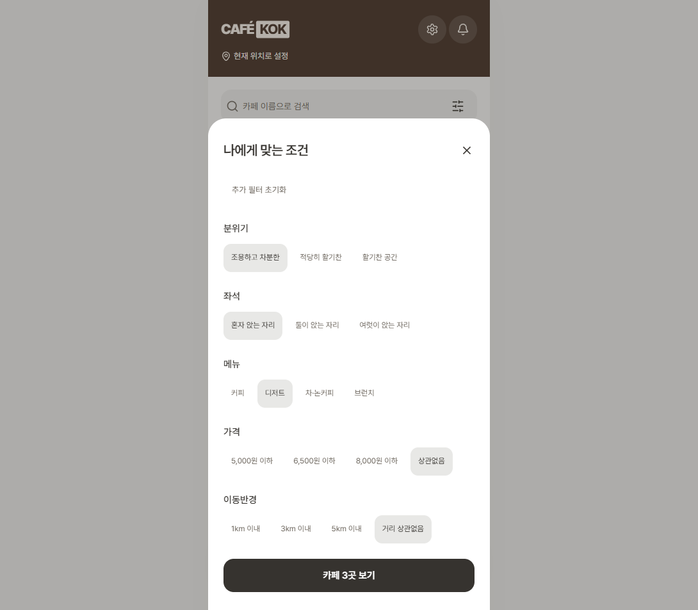
서비스 기획부터 UX/UI 디자인까지 전 과정을 직접 수행했습니다. 사용자의 평소 취향과 방문 목적을 바탕으로 카페 추천부터 상세 정보 확인, 저장까지 이어지는 핵심 이용 흐름을 설계했습니다.
취향 설정과 목적별 추천이 자연스럽게 연결되도록 정보 구조를 구성하고, 온보딩부터 홈, 카페 상세, 탐색, 저장까지 주요 화면의 UX/UI를 디자인했습니다.
OVERVIEW
평소 좋아하는 카페의 분위기는 같아도, 오늘 방문하는 목적은 달라집니다. 카페콕은 개인의 취향과 오늘의 방문 목적을 함께 고려해 후보 카페를 찾고 비교해 방문할 곳을 고르는 모바일 서비스입니다.

BACKGROUND
카페를 고를 때는 가격과 분위기, 위치와 좌석을 함께 봅니다. 방문 전에 필요한 정보가 여러 곳에 흩어져 있으면 후보를 비교하기 어렵습니다.
출처 N-Survey
지도 앱 리뷰·별점 우선 확인
출처 한국경제·진학사 캐치
높은 가격
출처 N-Survey
카페를 선택하는 기준이 여러 가지인 만큼, 방문 전에 필요한 정보를 한곳에서 비교할 수 있어야 합니다.
SERVICE CONCEPT
카페콕은 평소의 취향과 그날의 목적을 함께 고려해 상황에 맞는 카페를 제안합니다.
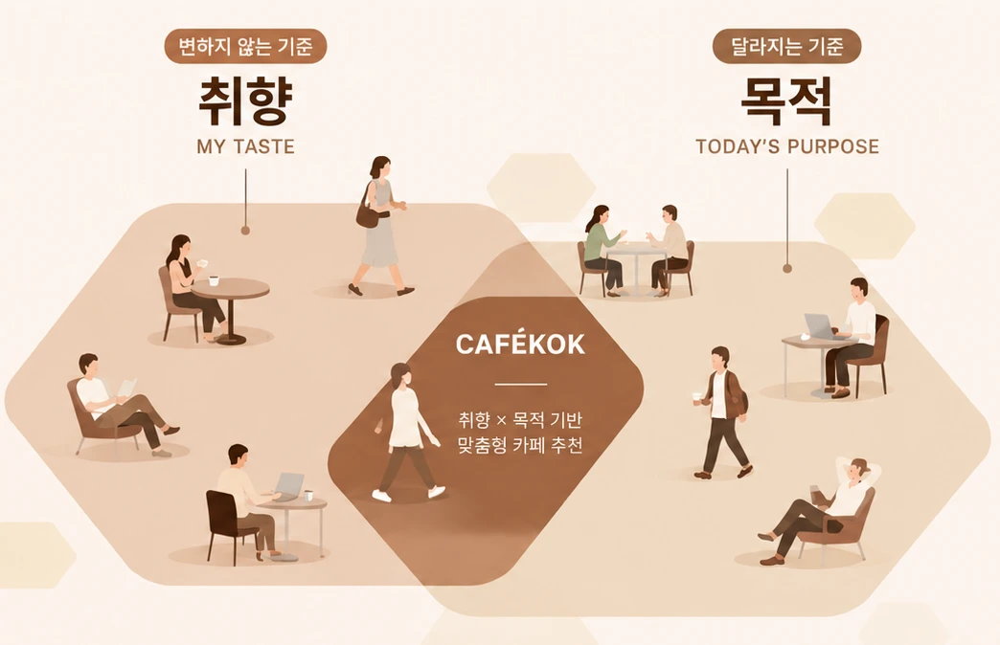
나의 취향과 오늘의 목적을 함께 반영합니다.
상황에 맞는 후보를 먼저 보여주도록 설계했습니다.
같은 취향으로도 목적에 따라 새로운 공간을 둘러볼 수 있습니다.
USER FLOW
평소 선호하는 카페 취향을 설정하고 오늘의 목적을 고르면, 추천 결과에서 카페를 비교하고 원하는 곳을 저장할 수 있습니다.
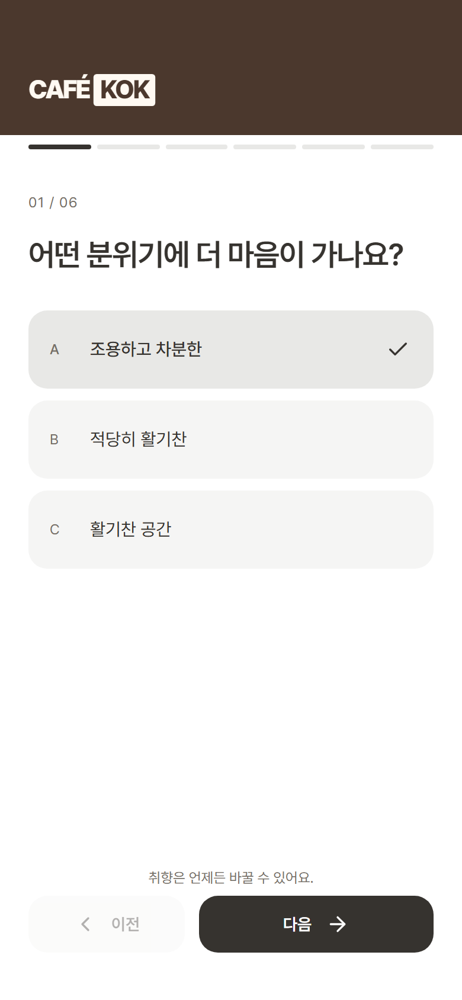
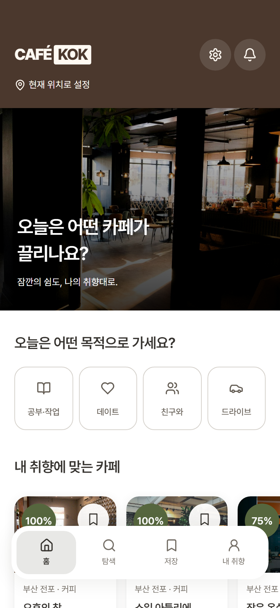
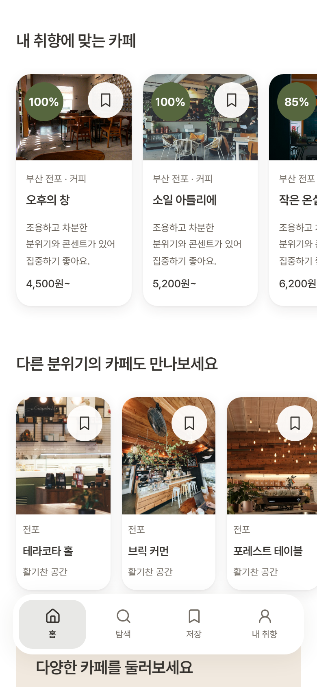
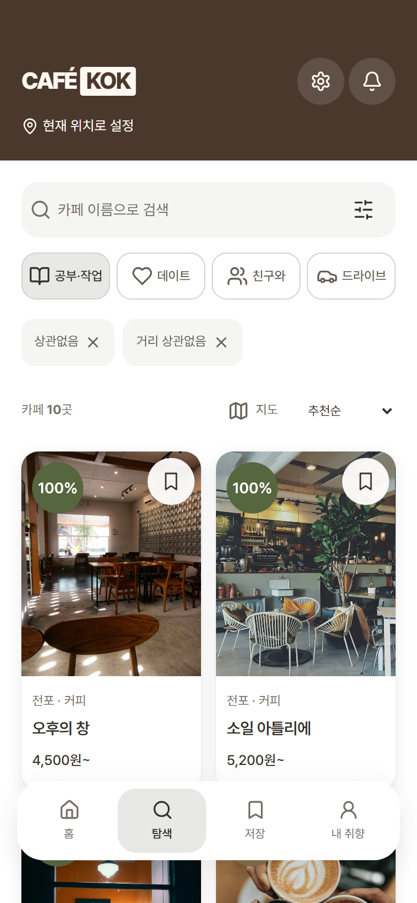
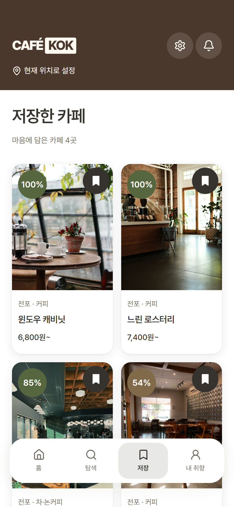
DESIGN SYSTEM
실제 프로토타입의 색상과 글자 크기를 정리하고, 화면에서 사용 중인 컴포넌트와 아이콘을 모았습니다.
Pretendard
#FFFFFF#36332F#4B382D#F5F5F4#E8E8E6#756F67#56663E#806A49#526C7A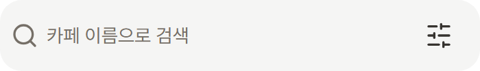
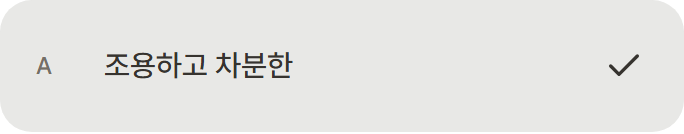
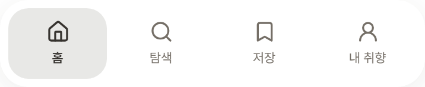
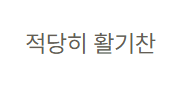
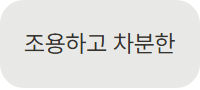
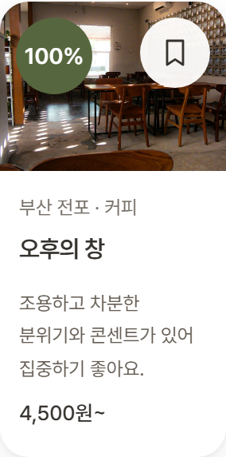
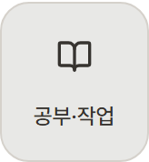
카페콕은 평소의 취향과 오늘의 방문 목적을 함께 고려하는 맞춤형 카페 추천 서비스입니다.
6가지 취향 설정을 기반으로 상황에 맞는 카페를 추천하고, 취향 일치율과 추천 이유를 통해 사용자의 선택을 돕습니다.
카페 추천부터 탐색, 상세 정보 확인, 저장까지 하나의 흐름으로 연결하여 나만의 카페를 발견하는 경험을 제공합니다.
APP UI DESIGN
서비스를 간단히 소개하고, 6가지 질문으로 나만의 카페 취향을 설정합니다.
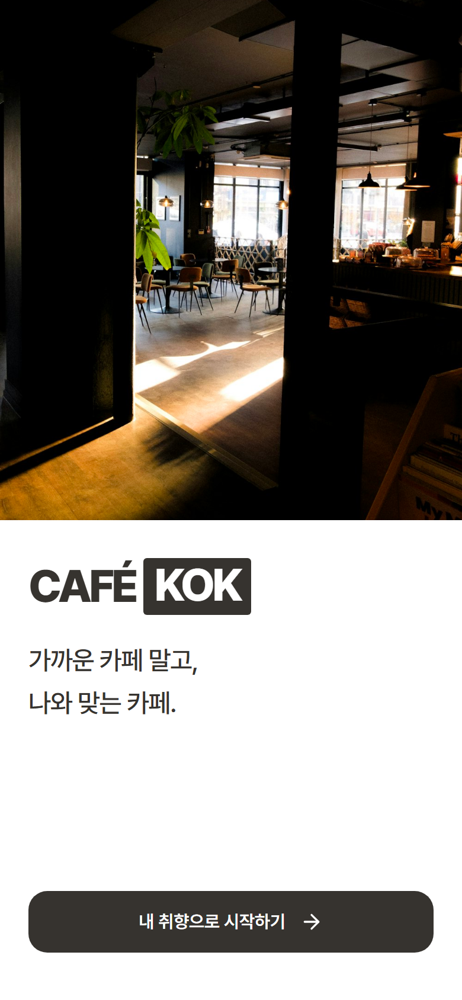
‘내 취향으로 시작하기’를 눌러 온보딩을 시작합니다.

분위기부터 메뉴와 이동 반경까지 6가지 기준을 한 번에 하나씩 선택합니다.
APP UI DESIGN
설정한 취향을 한눈에 확인하고, 필요한 항목만 다시 조정합니다.
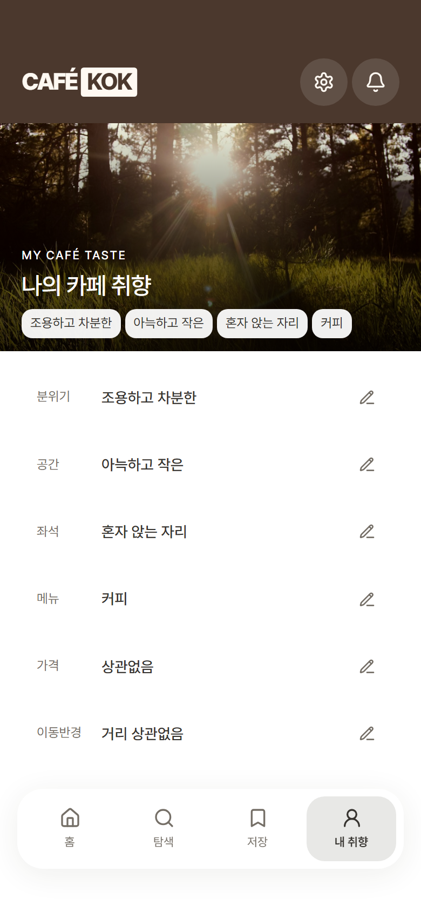
선택한 취향을 이미지와 키워드로 한눈에 확인합니다.
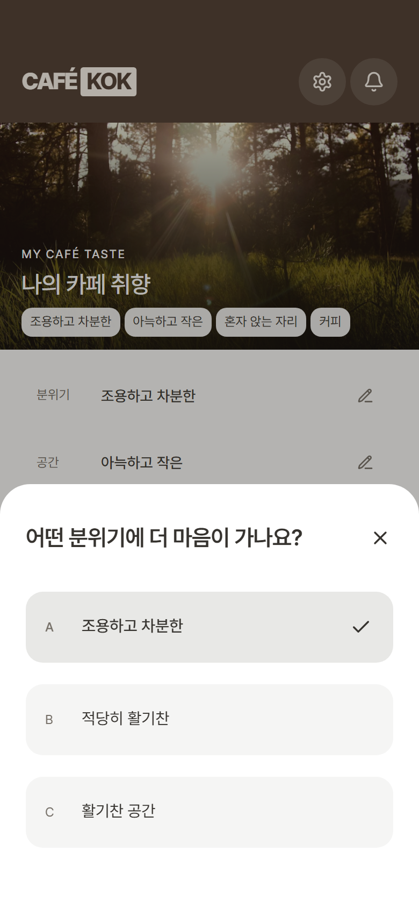
연필 아이콘을 눌러 원하는 조건만 다시 선택합니다.
APP UI DESIGN
오늘의 목적과 나의 취향을 담은 카페 추천
방문 목적을 선택하면 설정한 취향을 함께 반영해, 지금 나에게 맞는 카페를 홈에서 확인할 수 있습니다.
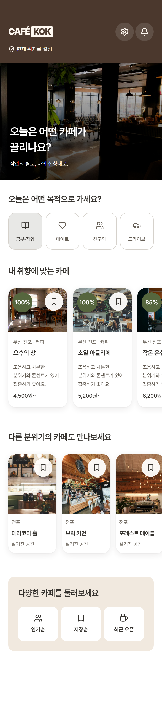
공부·작업과 데이트 등 방문 목적에 따라 추천 기준을 바꿉니다.
설정한 취향과 방문 목적을 함께 반영해 추천 카페와 일치율을 보여줍니다.
평소 취향과 다른 분위기의 카페도 함께 보여줍니다.
인기순·저장순·최근 오픈 탐색 선택지를 홈에 배치했습니다.
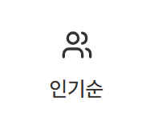
APP UI DESIGN
추천받은 카페를 고르는 데 필요한 정보.
카페 사진과 취향 매칭 이유를 확인하고, 메뉴와 위치 정보를 살펴본 뒤 마음에 드는 카페를 저장할 수 있습니다.
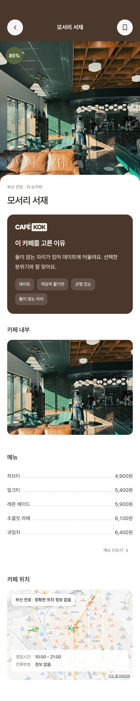
일치율과 취향 키워드를 통해 추천 이유를 확인합니다.
사진으로 공간 분위기와 좌석 구성을 미리 살펴봅니다.
대표 메뉴와 가격을 한눈에 비교합니다.
네이버 지도 캡처와 영업시간 등 방문 전 정보를 확인합니다.
APP UI DESIGN
검색부터 지도 확인까지, 조건에 맞는 카페 탐색
검색과 필터로 조건을 좁히고, 추천순·가까운 순·가격 낮은 순 정렬과 지도 전환으로 후보를 비교합니다.
이름이나 방문 목적으로 검색합니다.
정렬을 바꿔 카페 목록을 비교합니다.
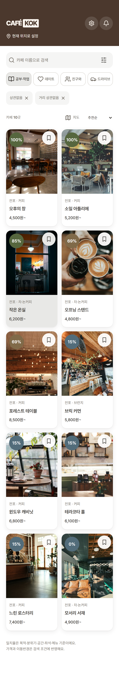
분위기, 좌석, 메뉴, 가격과 이동 반경을 원하는 조건으로 조정합니다.

지도 화면에서 번호 핀과 연결된 카페 목록을 함께 둘러볼 수 있습니다.
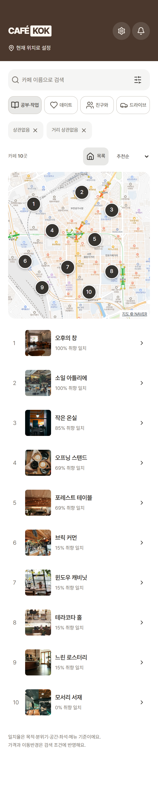
APP UI DESIGN
마음에 드는 카페를 저장해 다시 찾아보세요.
관심 있는 카페를 한곳에 모아 비교하고, 북마크 버튼으로 저장 상태를 바꿀 수 있습니다.
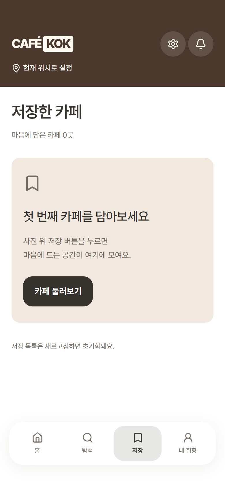
저장한 카페가 없을 때는 ‘카페 둘러보기’ 버튼으로 탐색을 다시 시작할 수 있습니다.
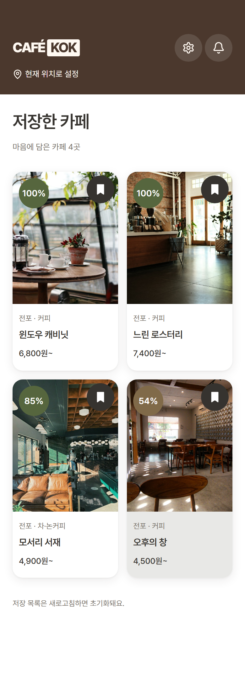
관심 있는 카페를 한곳에 모아 카드로 확인합니다.
북마크를 다시 눌러 원하는 카페의 저장을 해제합니다.
REVIEW
카페콕은 개인마다 다른 취향과 그날의 방문 목적을 함께 고려하면 카페 선택이 더 편리해질 것이라는 생각에서 시작했습니다. 막연한 취향을 6가지 기준으로 구체화하고, 추천부터 탐색과 저장까지 하나의 이용 흐름으로 설계했습니다.
LEARNED
카페를 고르는 기준을 취향 질문과 방문 목적 선택으로 옮겨, 추천의 근거를 화면에 드러내는 과정을 배웠습니다.
LIMITATION
취향 매칭과 탐색을 프로토타입으로 구현했고, 추천 결과의 만족도와 사용성은 후속 사용자 테스트에서 검증할 과제로 남았습니다.
NEXT STEP
취향 질문의 이해도와 추천 결과의 적합성, 카페 선택 과정에서의 불편함을 관찰하겠습니다.